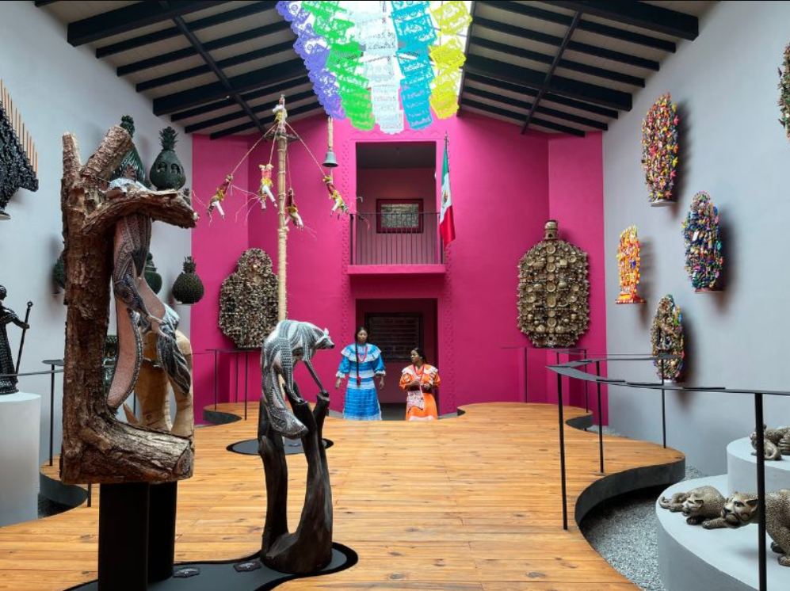

Son un Museo que exhibe y conserva el legado de la Fundación Mama Viña y Oscar, cuya colección y recursos buscan impulsar el conocimiento y reconocimiento del arte popular de nuestro país como patrimonio colectivo de México así como el patrimonio cultural de los grupos étnicos de Valle de Bravo e impulsar actividades culturales, sociales y educativas para la transmisión de todo su legado cultural.